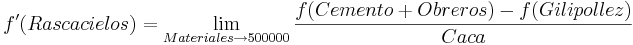

De: La Frikipedia, la enciclopedia extremadamente seria.
De: La Frikipedia, la enciclopedia extremadamente seria. De: La Frikipedia, la enciclopedia extremadamente seria.
Programa pseudopsicótico anomálico-inconsciente, destinado al arruinamiento de los matrimonios de Aspiña por culpa de las gilipolleces que intentan imitar los maridos sobre este programa, y que muestra la realidad imposible de cómo hacer una de mesita de noche tan sólo con un puñaíto hagua y un taladro.
También se dice que fue un proyecto de los soviéticos para apoderarse del mundo mediante chips ultrainteligentemente implantados en herramientas chafadas e inútiles con la función de ,mediante ondas ultrasónicas cerebrales, hacer que la gente se matara ella sola. Los yanquis consiguieron evitar la tragedia, pero no tiraron el proyecto a la basura, se lo vendieron a TVE-2.
Al abrirlo los directivos encontraron un porrón de herramientas, un manual de instrucciones para utilizarlas en ruso, vietnamita, o japonés, o algún idioma, se cree que humano, un vasco muy apañado y una casa sin aire muebles. Los directivos empezaron a darles al coco, se hizo música, y se pusieron a pensar. Entonces, decidieron hacer un programa de televisión donde te enseñaban a utilizar de 20.000 formas distintas un martillo.
Por favor, nunca hay que tener cerca herramientas que puedan llevarte a utilizarlas durante una explicación, que si no te va a entrar la picá de loco de intentarlo y no te saldría bien la jugada.
En Bricomania los muebles los hacen duendes de Chuck Norris Santa Claus debajo de la mesa de trabajo. El programa no es en directo, así que no podrás bajar la guardia en ningún momento, no vaya a ser que el tipo te tire una llave inglesa por la TV.
Nunca intentes los proyectos del programa, será mejor irse al Ikea a darse una vuelta.
Al principio sonará una musiquilla de mierda agradable, copiada de los creadores de la banda sonora de Verano Azul. Es utilizada para captar el mínimo máximo de personas, que creen que van a ver algo interesante como todo lo que echan en la 2. En realidad, la musiquilla se compone de grabados milenarios de gemidos de Homero Simpson capaces de atraer a cualquier ser vivo, bueno... a cualquier cosa.
Una vez ya estás hipnotizado, y no puedas escapar, comenzará el programa. Un señor barbudo, viejo rejuvenecido y con cara de asco buena persona sale ante la cámara encima de un mueble, que según él, lo acaba de construir. MENTIRA, los han hecho los puñeteros duendes.
Durante la segunda media hora, el señor vasco te empieza a decir como utilizar las herramientas más inverosímiles, con las que se puede hacer desde un microprocesador hasta un Fórmula Uno, y si te pones, hasta con pito de la cucaracha. Sacan los materiales de un agujero negro que lo conecta con la dimensión de los habitantes maderos, troncos, y demás objetos de construcción, como el el Black & White 2. Por ese motivo, en esta dimensión el programa tiene varias denuncias por rapto, torturas y/o/u asesinatos, entre otros.
Al final del programa, sale el vasco con el mueble de los duendes. Si te fijas bien, a un lado de la pantalla se puede ver un amasijo de madera, clavos, lefa y silicona. Ahí esta el verdadero trabajo que sale haciendo en el programa.
En ocasiones ponen Briconsejos, que en realidad sirve para que los duendes puedan terminar el trabajo (ya os dije que el programa es en directo). Por lo general, estos consejos son una mierda carecen de utilidad, enseñándote como pelar un cable, o ponerle una mierda a tu suegra en el pelo sin que ésta se dé cuenta.
Al final de este, el directivo jefe, mezcla entre el Calvo de la Sexta y un mono araña de los montes Kiuloe del sur de Indonesia (¿Dónde coño está eso?), lo guarda todo en una caja sin fondo, lo mete debajo de la cama, y se va a ver los Lunnis o en su lugar a los Teletubbies en versión gay, ante de dormirse de una puñetera vez.
Para empezar, debes ser capaz de reunir 500000 toneladas de tungsteno, 1 tribimillón de átomos de plomo (no son muchos, en serio), y un equipo de 5000 tíos, en su defecto servo-robots, para que te ayuden a hacer el rascacielos en cuestión.
Después de esto, y con todo preparado, deberás de sacarte el título de Educación Primaria, la ESO, la ESA, y la OTRA, haz Bachillerato, sácate la selectividad con un 22 de nota media, y hazte la carrera de arquitectura en menos de una semana, siempre y cuando no te reviente antes el cerebro.
Para cuando hayas acabado esto, tendrás que buscar una parcela en Ciudad Frikipedia donde puedas construir tu rascacielos, para lo que deberás sobonar a todos los dirigentes de la Frikipedia y seguidamente pagarle a Hacienda para que te dejen empezar de una vez las obras.
Seguidamente, deberás de coger 30 trillones de kilos de cemento para tirártelos encima hacer la base del rascacielos, y ya puedes convocar a Dios o a Falete para que te ayude con la obra, porque si quieres conseguirlo deberás de acabar el edificio en otros 7 días menos el domingo que deberemos irnos de tapitas.
Si has conseguido terminarlo, enhorabuena, ya te has conseguido poner a la altura de leyendas tan legendarias como Bear Grylls,McGyver o Bigfoot Pepe, ya te podrás morir tranquilo de una vez como un auténtico friki.
Adicionalmente, por lo tanto, podríamos derivar que: 
Este espacio patrocinado por Leroy Mierlín lo presenta un tipo que se parece a Pinto, el portero del Farsa, y que tiene una pinta inequívoca de marihuanero al grado de 250%. Lo único que hace es explicarnos cosas de porretas jardinería que no nos interesan o cómo conseguir cogollos de marihuana con cola de perro. Luego cuando acaba el programa se va a esnifar pegamento con Piercott o a fumarse aún más petas de marihuana.
Son espacios (patrocinados por Leroy Mierlín como no) en los que suena una musiquita como la de las recreativas donde una tipa sin cara (nunca se la ve, será porque no tendrá) que te enseña a hacer cosas inútiles como encender un ordenador o conectar la mierdastation a la tele de plasma de tu cuarto, si es que tienes una, que lo dudo.
Total, que más te vale entrar en youtube y aprender con Loulogio a dibujar un falo.
Este programa jode la ostia porque el flipao arregla todo lo que se propone, y una mierda, porque las mujeres siempre dicen "¿por qué no seras como el peludo de la tele?", y tu como loco buscas por Internet tomas falsas del tío jurando en harameo (con a, no me seas gandul) esnifando pegamento.
Lo que pasa es que este tipejo tiene a su disposición a los 1000 duendecillos de Santa Claus, que no viven con solo la Navidad (qué cojones). También tienen que pagar las letras de la madriguera.
Para confirmar esto, intenta hacer la manualidad a la perfeccion tu siguiendo estos pasos:
-Snifa una raya de tungsteno
-Lija y repasa los materiales
-Snifa una raya de cerapio
-Compra clavos
-Snifa una raya de rebuznio
-Enciende el taladro
-Snifa una raya de harwario
-Ponle la broca
-Snifa una raya de cabrono 14
-Ves a un duende
-Si no lo ves, empieza de cero una y otra vez hasta que lo veas
-Le dices hola
-Le preguntas que tal la familia
-Preguntas si te puede ayudar
-Si se niega, duérmete y cuando despiertes, empieza desde la casilla de salida
-Si dice que si, túmbate y obsérvale trabajar
-Te duermes
-Te despiertas
-Ves todo sin montar, como estaba
-Te vuelves a sniffar todo lo anterior
-Ves al demonio
-Llamas al demonio
-Le ofreces tu alma a cambio de que lo monte a la perfección
-Te lo monta
-Te arrastra al infierno
Bueno, eso es todo pardillos amigos. Estas en el infierno, pero el mueble esta montado ¿lo prometí, verdad?
NOTA: Si en vez de el duendecillo ves un túnel hacia una luz, una de dos:
-Le dices al duendecillo que deje de enfocarte con la linterna
-Si no funciona, una ración de ostio que extraiga yacimientos de dolorio
-Y se te pasa
-Si no, te mueres (que curioso, ¿verdad?)
Autor(es):